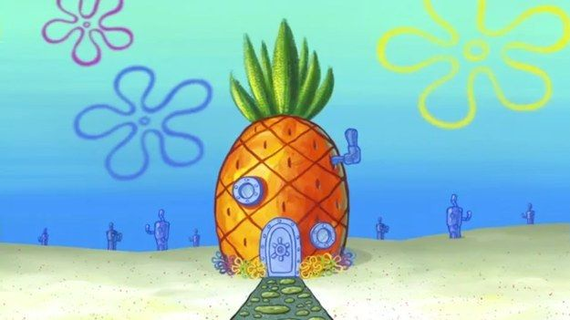
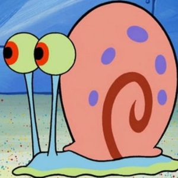
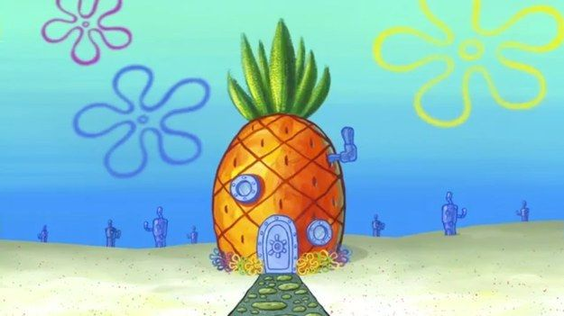
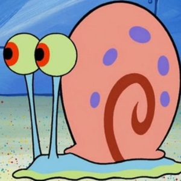

Om Svampbob
Svampbob bor i Bikinibotten i en annanas tillsammans med sin snigel Gary
Svampbobs hus
Svampbobs snigel Gary
Egenskaper
- Gul
- Fyrkantig
- Svampig
Svampbob bor i Bikinibotten i en annanas tillsammans med sin snigel Gary
Svampbobs hus
Svampbobs snigel Gary